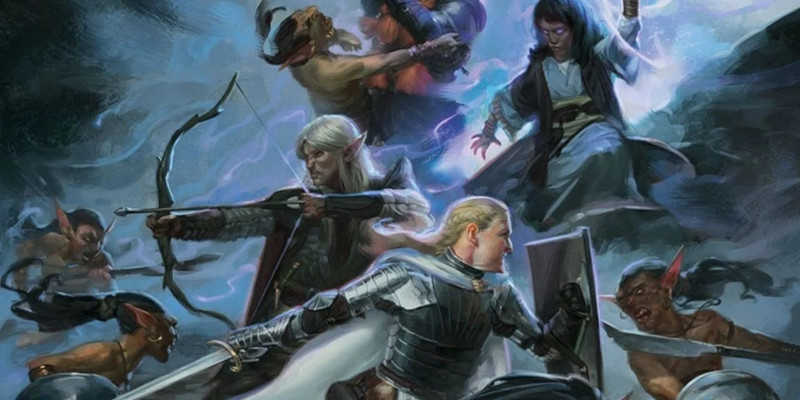

Le roleplay des monstres en combat
Le combat est un passage obligé à D&D : « moi vois, moi frappe ». Pour sortir de cette routine, on peut proposer aux PJ d’autres schémas, même lorsqu'ils massacrent la plupart des monstres en moins de trois tours.
Vous avez fait une belle introduction à la scène, insistant sur les détails immersifs du décor, et à la question fatidique « que faites-vous ? » les PJ ont répondu « j’attaque ». Cependant, malgré toutes les options tactiques de D&D, les PJ peuvent être face à l’angoisse de la boxe écossaise [donner des coups sans bouger, jusqu'au ko de l'un des deux participants] et s’appuyer sur les fondamentaux. Est-ce parce que les joueurs manquaient d’informations qu’ils ont réagi selon un schéma de combat-fuite ? Et si c’était simplement une habitude rôliste difficile à perdre ?
Le combat reste du jeu entre les jets de dés
Mon avis est qu’il faut garder en tête que le combat reste du jeu de rôle : très cadré avec une structure contraignante et un ralentissement excessif du passage du temps. Cependant, on peut continuer à faire tout ce qu’on a l’habitude de faire (comme chercher des indices, faire du roleplay ou trouver une idée astucieuse pour résoudre le problème) : il y a plein d’astuces pour rendre le combat intéressant.
Laisser du temps et de l’espace de jeu
Pour que les joueurs et joueuses puissent proposer des solutions créatives durant une scène de combat, il est important de leur laisser l’espace et le temps de jeu pour le faire. Surtout si les PJ exterminent la plupart de leurs adversaires en trois tours. Et la première chose à faire est que leurs adversaires montrent l’exemple en faisant autre chose que taper. Et c’est là que le bât blesse : comment, en moins de trois tours, donner l’opportunité aux monstres de faire autre chose que prendre des coups et encourager les joueurs à tester d’autres actions que frapper ?
La première astuce est de donner le maximum de pv à vos monstres. Si vous regardez les stats d’un monstre, les PV donnés correspondent peu ou prou à la moitié de leurs points de vie maximum. Pourquoi seuls les PJ pourraient être full pv avant un début de combat ? Cette astuce est à utiliser uniquement pour vous laisser deux voire trois tours pour faire autre chose que taper.
Préparer un combat sur trois tours
Si les adversaires des PJ sont en bonne santé, vous allez pouvoir imaginer des actions différentes pour les PNJ :
- Ils peuvent provoquer les PJ pour les pousser à la faute.
- Ils peuvent refuser de s’engager dans le combat pour se déployer et encercler les PJ (en gros, utiliser l’action Esquiver ou Se désengager).
- Ils peuvent tenter de se saisir d’un objet ou d'une personne pour le mettre hors combat (c’est-à-dire dans l’incapacité de se battre, comme se saisir de l’épée du guerrier).
Puisque vous savez que les combats prennent trois tours, préparez-les et réfléchissez aux actions que peuvent faire les adversaires des PJ :
- Au tour 1 : roleplay et caractérisation des adversaires, c’est-à-dire que vous pouvez les faire parler et même montrer quels types d’adversaires ils sont.
- Au tour 2 : vous savez que les PJ trouveront un parchemin sur le cadavre de leur adversaire ? Pourquoi ne pas leur donner l'info durant le combat par des remarques entre PNJ, du genre : « [le Grand Méchant] nous a pas assez payés pour ces coquins-là ! » Ou alors la broche ou l’amulette importante tombe durant le combat et le PNJ de s’exclamer : « Ciel ! Mon objet secret à moi ! »
- Au tour 3 : des manœuvres spéciales (comme agripper quelqu'un, le renverser, l’étourdir).
- Aux tours suivants : là, on peut reprendre la boxe écossaise.
Préparer des infos à lâcher aux PJ pendant le combat
Sachez que le joueur qui parlera le plus pendant le combat sera le MJ. Il est donc important que ses interventions soient préparées. Vous pouvez enrichir les descriptions des dégâts pour mettre de la couleur au combat. Mais à mon avis, ce qui peut rendre les combats plus passionnants, au point que le temps passé à les jouer importe peu, ce sont les infos données aux joueurs. Parce que c’est l’info qui continue à faire avancer le scénario et qui va diluer les jets de dés (mais le combat prendra plus de temps) et surtout elle va donner du relief à celui-ci. Par exemple :
- Si les adversaires des PJ sont embauchés spécifiquement contre eux, leurs armes (auxquelles les PJ feront attention) peuvent donner ce type d’info :
- Elles sont trop bien entretenues pour des brigands, indiquant une certaine maîtrise.
- Les adversaires ne les utilisent pas comme il faudrait : une rapière et un cimeterre s’emploient avec des techniques différentes.
- Ce sont des armes toutes identiques, alors que des brigands sont une bande hétéroclite.
- Une partie du butin peut être montrée durant le combat (et surtout au premier tour) :
- L’objet d’art est peut-être une relique ou un porte-bonheur que les combattants embrassent par superstition.
- Une potion de soins peut être bue juste avant le début du combat (sans qu’elle fasse partie du butin). Les PJ pourront en déduire qu’ils trouveront peut-être des potions de soins mais aussi que les adversaires sont full en points de vie.
- S’ils sont croyants, sûrs d’eux ou agressifs, leurs adversaires pourront narguer les PJ et les pousser à la faute, comme les attirer dans une situation avec un désavantage.
Un combat où les adversaires ont eu leur moment de gloire
Soyons réalistes, un combat à D&D sera toujours long. Chercher à le réduire est complexe à cause des mécaniques de jeu inhérentes au combat. Autant dans ce cas prendre le problème à l’envers et faire en sorte que les combats soient plus longs que prévu mais que les jets de dés soient entrecoupés de roleplay et d’enquête. Finalement, avec une bonne préparation, le combat peut devenir un moment bien plus intéressant que de la boxe écossaise.

Écrit par Sylvain Chauvet